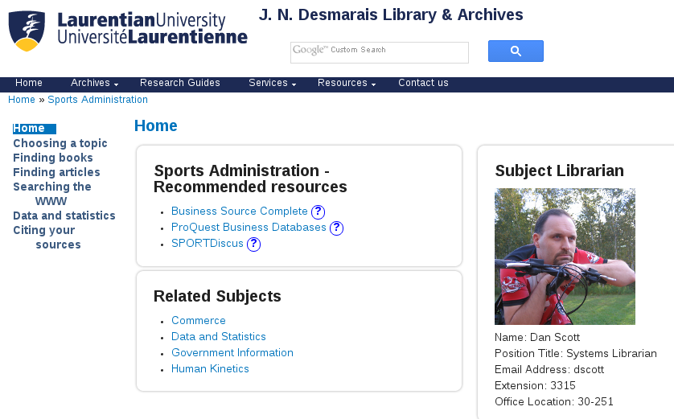
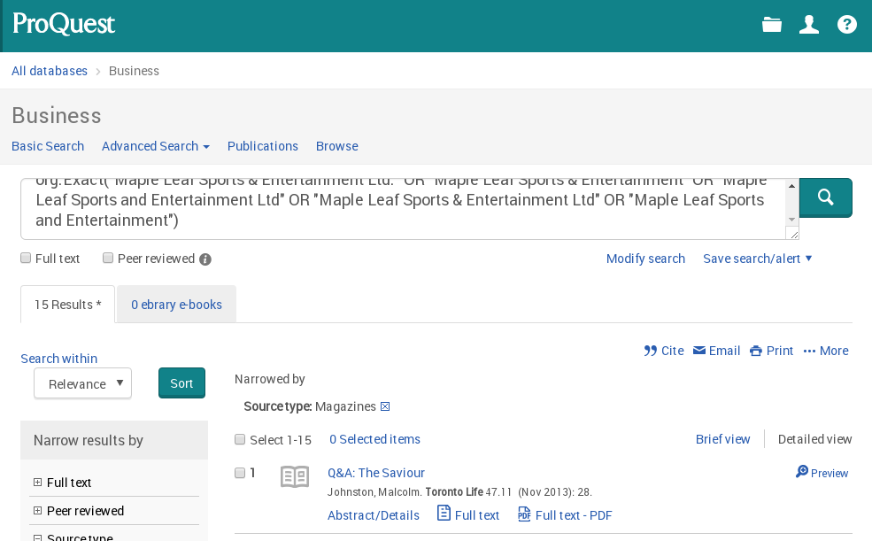
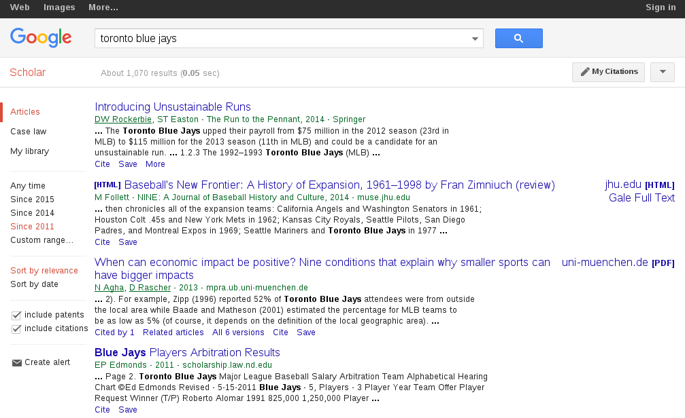
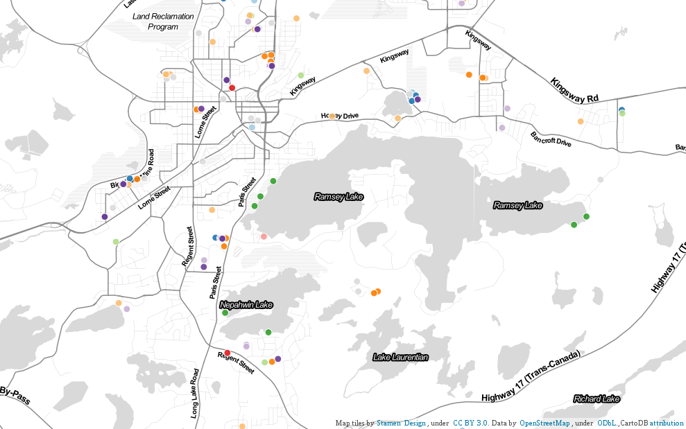

A deeper research bench
SPAD 0100
Sports enthusiasts know the value of teams
- Football, baseball, hockey, obviously...
- but even individual sports have teams behind them.
- Add the library to your personal team!
Photo credit: Sportsnet
Photo credit: Sportsnet
Elements of administrative success
- Gathering information
- Evaluating information
- Forming a decision
- Communicating the decision
Q: Where does the library fit in?
Mission statement
to organize the world's information and make it universally accessible and useful
The library spent almost $2.0 million on electronic resources last year.
Gathering information
- Print collection: books and journals
- Archives: including digitized student newspapers
- Electronic resources: "the dark Web"
- Government documents: legislation, demographics
- ... and almost anything else via inter-library loan (RACER)
SPAD research guide
ProQuest Business Databases
Google Scholar != Google
Evaluating information
- Determining the authority of a source
- Crunching statistical data
Communicating the decision
The population-dense section of downtown Toronto bounded on the west by Bathurst Street, to the east by Simcoe Street, to the north by Queen Street, and to the south by the Lake Ontario waterfront lacks both library facilities and sports facilities...
YAWN
Communicating the decision
Sudbury Open Data
Reaching the library
- In person:
- Quick reference available during all library hours
- Random librarians, available Monday - Thursday from 10:00 am - 5:00 pm and Friday from 10:00 am - 2:00 pm
- Specific librarians available by appointment
- Email: at reference@laurentian.ca (matching "random librarian" hours for responses)
- Online chat: for immediate, general research help
- Monday - Thursday: 10:00 am - 10:00 pm
- Friday: 10:00 am - 5:00 pm
- Weekends: 12:00 pm - 6:00 pm
Add us to your team
- We'll help you make the most of your Sports Business Journal subscription
- We'll help you create some awesome visualizations of your data
- We'll ensure you have high quality sources of information
- We'll save you time